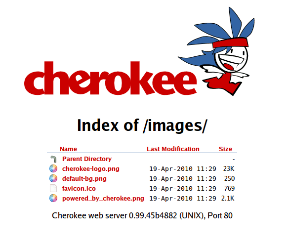

$ echo "This is a test" > /tmp/1/2/test
$ curl http://localhost/1/2/test
This is a test
$ curl http://localhost/1/2/test/this/is/pathinfo
This is a test
$ curl -D - http://localhost/1/2/test.no | grep HTTP
HTTP/1.1 404 Not Found
The List & Send (`common` internally) handler behavior depends on whether it replies a request for a directory or a file.
In case a directory is requested, it will use the Listing Only handler in order to list its contents. And, in case a file is request, it will use the File Sending handler.
Parameters
| Parameters | Type | Description |
|---|---|---|
| allow_pathinfo | boolean | Makes the handler to stop parsing the pathinfo string. Default: Disabled. |
| allow_dirlist | boolean | Enables showing the contents of a directory. |
Besides, it inherits all the parameters from the file/Static Content and dirlist/Only listing handlers.
- This example shows the practical effect of pathinfo
-
Examples
Here is a basic example.

Figure: Configuration

Figure: Actual output
Indexes
This is the behavior inherited from the dirlist/Only listing handler.
Simply enable the desired file attributes to be shown under Listing, and choose the HTML template to use (default -with the Cherokee logo-, plain -a fixed width theme- and firefox3).
You can also include a Notice file to show its contents on top of every automatically generated list.
Of course, the lists are sortable by any of the displayed attributes.